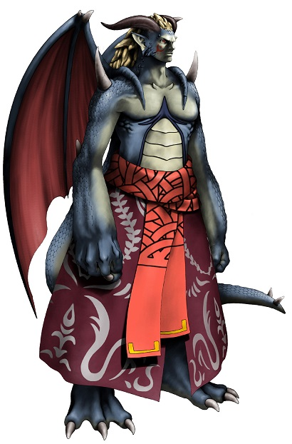

Les Drakyrs
Originaires du continent de Ragnoth, ils vivent dans la ville de Drakynia, sous forme de tribu avec une famille à leur tête : ceux qui possède la marque de Wil. À présent, quelques humains sont tolérés pour vivre à Drakyrnia, même s'il règne parfois quelques tensions liées à la cessation de la guerre assez récente.

Durant le grand conflit
Lors de la guerre entre les deimos et les humains, la majorité des jeunes drakyrs ont rejoint un certain Droguza ce qui a laissé un village uniquement remplit d'enfants et de vieux drakyrs. Assez peu de ceux qui ont suivi Droguza sont revenus vivant de la guerre, ce qui a porté préjudice au village. Les drakyrs durant la guerre contre les humains avaient souvent des échauffourées avec ces dernier aux niveau des mines de pierres des esprits pour en prendre chacun le contrôle.
Les descendants des dragons
Les drakyrs possèdent pour la plupart des écailles vertes, il en existe certains qui en possèdent des bleues et mêmes des roses qui leur recouvre tout le corps. Les ailes qu'ils ont dans le dos leurs permettent de pouvoir voler, l'intérieur des ailes peut être rouge ou de la même couleur que le reste du corps. Leurs griffes acérées les rendent dangereux et pour pouvoir utiliser une arme humaine, elle doit souvent être modifiée pour correspondre. Ils mesurent en moyenne entre 1,40 et 1,80 mètre à l'âge adulte pour environ 50 à 80 kg.
Noms drakyrs
Les deimos ne possèdent pas de nom de famille, cela ne fait pas partie de leur culture. (les noms argoniens marchent plutôt bien)
Noms masculins : Darc, Windolf, Williwo, Willo, Sagan (tous présents dans le jeu).
Noms féminins : Tébéilla, Arbys, Marza, Tasen, Onaléi.
Traits
Augmentation de caractéristiques. Votre Dextérité augmente de 2 et votre Sagesse de 1.
Âge. Un drakyr atteint l'âge adulte à 18 ans et a une longévité de 80 ans environ.
Alignement. Même s'ils vouent un certain attachement pour leur ville d'origine, les drakyrs aiment la liberté, on en croise assez souvent hors de Ragnoth. Comme chez les humains on peut en trouver qui peuvent être très bon et d'autres très mauvais, il n'y a pas de tendance particulière.
Taille. Les drakyrs mesurent en moyenne entre 1,40 et 1,80 mètre de haut, pour un poids variant entre 50 et 80 kg. Votre taille est Moyenne.
Vitesse. Votre vitesse de base est 9 mètres.
Vol. Vous avez une vitesse de vol de 15 mètres par round. Pour utiliser cette vitesse, vous ne devez pas porter d'armure moyenne ou lourde.
Griffes. Vous maîtrisez vos armes naturelles, lesquelles infligent 1d4 de dégâts tranchants.
Langues. Vous pouvez parler, lire et écrire le commun et le drakyr.
Capacités magiques
| Niveau personnage | Niveau des sorts | Sorts | - Emplacements de sorts - | |||||||
| 1 | 2 | 3 | 4 | 5 | 6 | 7 | 8 | |||
| 1 | 1 | Vent destructeur | 1 | |||||||
| 3 | 2 | Célérité | 2 | 1 | ||||||
| 5 | 3 | Ralentissement | 2 | 1 | 1 | |||||
| 7 | 4 | Tornade | 3 | 2 | 1 | 1 | ||||
| 9 | 5 | Cyclone | 3 | 2 | 2 | 1 | 1 | |||
| 11 | 6 | Force mentale | 3 | 3 | 2 | 2 | 1 | 1 | ||
| 13 | 7 | Champ défensif | 4 | 3 | 3 | 2 | 2 | 1 | 1 | |
| 15 | 8 | Lame de vent | 4 | 3 | 3 | 3 | 2 | 1 | 1 | 1 |
Liés au vent. Les drakyrs sont capables d'utiliser des emplacements de sorts supérieurs à celui du niveau du sort pour augmenter l'efficacité de ses sorts de vent (+1 dé de dégâts / niveau d'emplacement de sort) ce qui augmente le coût en pierres des esprits de 2/niveau de sort supplémentaire.
Par exemple le sort vent destructeur est un sort de niveau 1 qui tape à 3d6 et coûte 10 pierres des esprits. S'il est utilisé avec un emplacement de sort de niveau 2 il fera 4d6 pour un coût de 12 pierres des esprits.
Connexion à la magie. Ils sont également capable d'utiliser des emplacements de sorts supérieurs à celui du niveau du sort pour augmenter l'efficacité de sorts des autres éléments connus mais pour un prix de 3 pierres des esprits par niveau d'emplacement de sort supplémentaire.